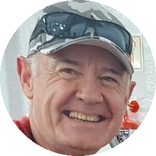

Defined publishing activities, formats, review rounds, account coordination and deliverables.
SELECTED CLIENT WORK
People, projects & real creative work.
Browse selected projects by organization, professional or creator. Open a card for the full service context; use the category filters to move quickly.
BROWSE BY CATEGORY
Organizations
Organizational communication, newsrooms and public service
Organizations
WTOP
Audience Growth, Publishing & Hook Strategy
Explore case ↗Organizations
The Daily Memphian
X Account Growth, Connection Development
Explore case ↗Organizations
Voice of Rabbis
Organizational Account Growth, Verified Audience Development
Explore case ↗Organizations
WW3 Monitor
Rapid News Publishing, Headline-Only Content Workflow
Explore case ↗Public Figures & Professionals
Journalists, commentators and public-facing professionals
Professionals
Alec Lace
Daily Publishing, Content Hook Strategy
Explore case ↗Professionals
Farnaz Fassihi
Publishing Strategy, Hook Development
Explore case ↗Professionals
Melanie D'Arrigo
Daily Account Management, Quote-Post Publishing
Explore case ↗Professionals
Heather D McKeehan
Creator Revenue Monetization, Music Content Packaging & Publishing
Explore case ↗Professionals
Kenneth F Crowe
Account Monetization Support, X Account Management
Explore case ↗
ProfessionalsKurt Pretorius
X Monetization, Impression Growth
Explore case ↗Professionals
Charles Wise
Account Monetization, Organic Connection Building
Explore case ↗Professionals
Minnesota Reformer
Content Creation for X, Publishing Strategy
Explore case ↗Professionals
Kevin Ryan
Content Creation, Publishing Strategy
Explore case ↗Content Creators
Independent publishing, entertainment and creative channels
Creators
fOx
Full Account Management, Entertainment Content Strategy
Explore case ↗Creators
awesome_visuals
Organic Content Reward Qualification, Verified Audience Growth
Explore case ↗Creators
Gbhoy
Organic Content Creation, Publishing Strategy
Explore case ↗Creators
Bic Movies
Zero-to-One Account Launch, Niche Content Strategy
Explore case ↗Creators
Jay Roberts
Organic Content Reward Strategy, Verified Follower Growth
Explore case ↗Creators
ZeroBarkThirty
Creator Revenue Monetization, Account Growth
Explore case ↗Creators
CLxpzsolos
Creator Revenue Monetization, Football Niche Growth
Explore case ↗Others
More work from the existing portfolio
Others
Elle
Account Health Recovery, Visibility Recovery
Explore case ↗Others
Tad Nightingale
Account Growth, Monetization Support
Explore case ↗Others
Abigail29
Niche Account Growth, Monetization Support
Explore case ↗Others
Degenerate_Gambler
Account Growth, Monetization Support
Explore case ↗Others
🇺🇸LetFreedomRing
Account Growth, Monetization Support
Explore case ↗Others
Aaron Belton
Sports Account Growth, Monetization Support
Explore case ↗Client case studies are not independent customer reviews. Before/after statistics are portfolio-reported unless independently linked and validated.
Additional supplied profile artwork (6 images awaiting name confirmation)
These supplied images are kept separately until each profile can be matched with its portfolio record. No client identity, endorsement or result is inferred from the picture.
Image supplied · name to confirm
Image supplied · name to confirm
Image supplied · name to confirm
Image supplied · name to confirm
Image supplied · name to confirm
Image supplied · name to confirm
LET’S TALK STRATEGY
Your next project could start here.
No inflated promises. A specific conversation about the work your channels need.
DOCUMENTED PROJECT EVIDENCE
What makes a project story checkable.
Our detailed project pages distinguish portfolio-reported work from public platform information. Screenshots and dated analytics can be added to individual projects as approved records become available.
Account and content baseline for each platform, tied to a specific date.
Reach, engagement, website actions or growth, with comparable periods and data sources.
Consent to feature names, creative work and any private account analytics.